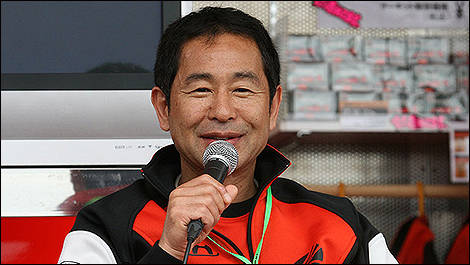
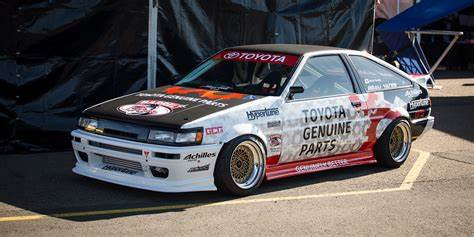

Keiichi Tsuchiya


| Type de voiture |
Puissance (WHP) |
| Toyota ae86 |
300 whp |
Cette légende du drifting, originaire de Nouvelle-Zélande, s'avère le fils du pilote de rallye Rod Millen.
Or, il évolue dans le domaine de la course automobile depuis son jeune âge. Champion de Formula Drift USA en 2005,
la saison 2013 s'avère celle qui marquera son absence pour la première fois.